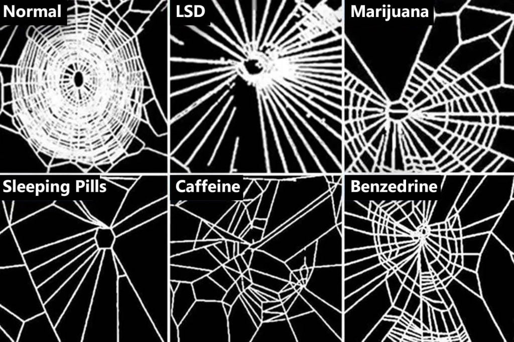
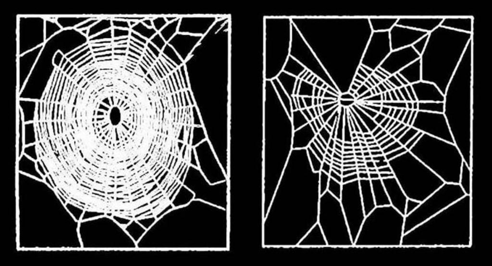
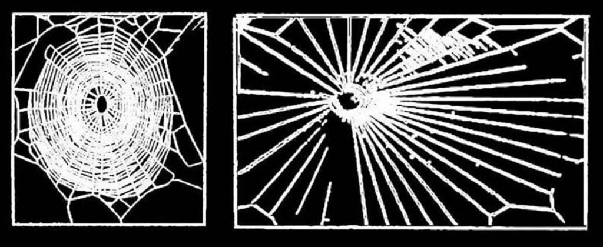
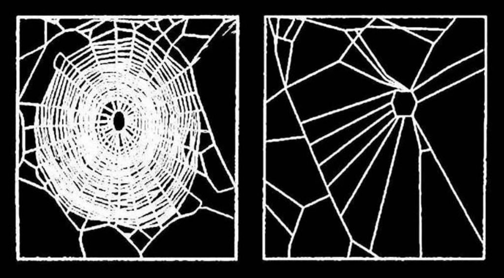
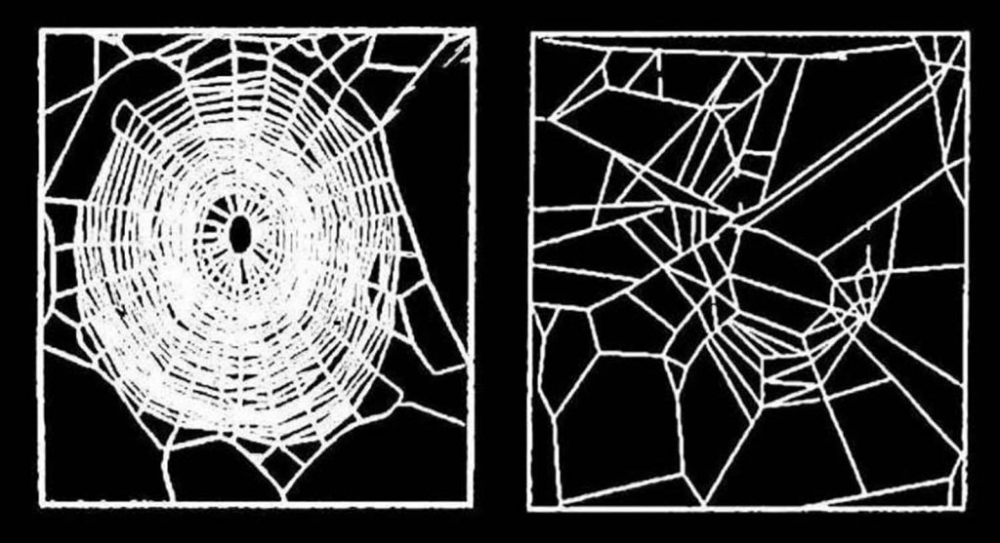
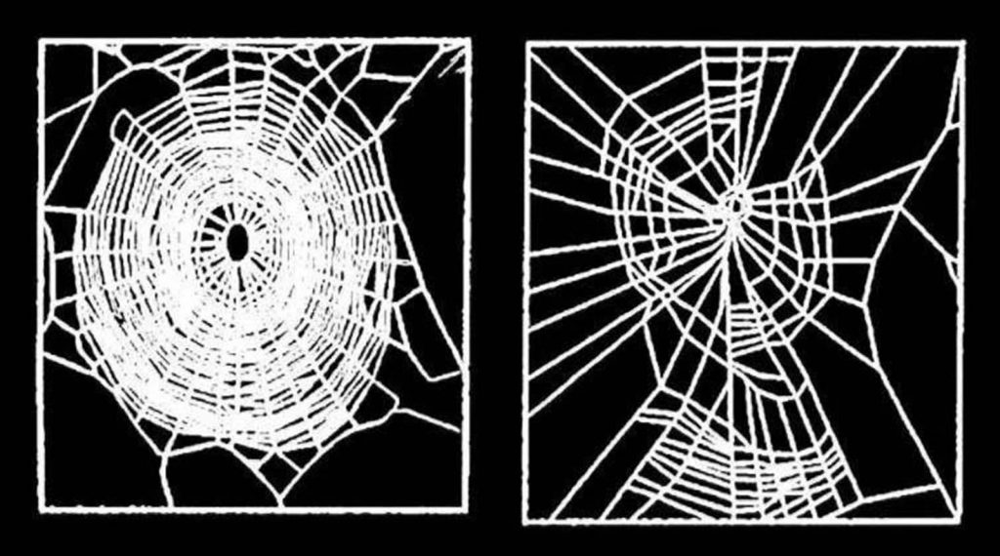
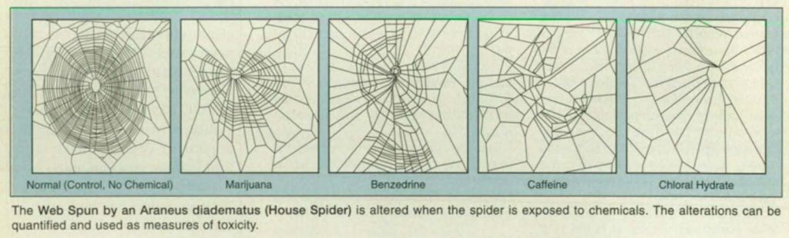

ဒီ သုတေသနမှာ စမ်းသပ်ခံ သတ္တဝါ တွေကတော့ ပင့်ကူ တွေပဲ ဖြစ်ကြပါတယ်။
နာဆာ သုတေသီ တွေဟာ ပင့်ကူ တွေကို မူယစ်ဆေးဝါး အမျိုးမျိုး တိုက်ကျွေးပြီး စမ်းသပ် ခဲ့ ကြပါတယ်။ မူးယစ် ဆေးဝါးတွေကို ဆေးကြောင် သွားလောက်တဲ့ ပမာဏ အထိ တိုက်ကျွေး စမ်းသပ်ခဲ့ ကြတာ ဖြစ်ပါတယ်။
ဒီ စမ်းသပ်တဲ့ သုတေသန ရလဒ်တွေကို ၁၉၉၅ ဧပြီလ မှာ နာဆာက သုတေသီ တွေက တင်ပြ ခဲ့ပါတယ်။

ဒီ သုတေသနကို နာဆာ လက်အောက်က မာရှယ် အာကာသ ပျံသန်းရေး ဗဟိုဌာန (Marshall Space Flight Center) က ဓါတ်ခွဲခန်းက သုတေသီ တွေက ပြုလုပ် ခဲ့ကြတာ ဖြစ်ပါတယ်။
သူတို့က မူးယစ်ဆေးဝါး တွေဟာ ပင့်ကူတွေရဲ့ ပင့်ကူအိမ် ယက်လုပ်နိုင်စွမ်း အပေါ် ဘယ်လို အကျိုး သက်ရောက်မှု ရှိသလဲ ဆိုတာကို သုတေသန ပြုခဲ့ ကြတာ ဖြစ်ပါတယ်။

ဒီ သုတေသနမှာ တိုက်ကျွေးခဲ့တဲ့ ဓါတုပစ္စည်း တွေထဲမှာ ကဖင်း၊ ဆေးခြောက်၊ LSD စိတ်ကြွဆေး၊ အန်ဖက်တမင်း (ယာဘ) နဲ့ အိပ်ဆေး တို့ ပါဝင်ပါတယ်။ အဲ့သည်နောက် ဒီ ဆေးကြွ နေတဲ့ ပင့်ကူတွေ ဘယ်လို ပင့်ကူအိမ် မျိုးတွေ ယက်လုပ်လဲ ဆိုတာကို လေ့လာ ခဲ့ ကြပါတယ်။
သုတေသန စာတမ်းမှာ ကောက်ချက် ဆွဲထား တာကတော့ ဆေးကြောင်တာကို တိုင်းတာနိုင်တဲ့ အညွှန်းကိန်း ကတော့ ပင့်ကူအိမ်ရဲ့ ဘောင်တွေကို ဘယ်လောက်ထိ ပြည့်ပြည့်စုံစုံ တည်ဆောက် နိုင်လဲ ဆိုတဲ့ အချက်ပဲ ဖြစ်ပါတယ်။ သုတေသီ တွေရဲ့ တွေ့ရှိချက် အရ ဆေးကြောင်တာ များလေလေ ပြည့်စုံတဲ့ ဘောင်ခတ်ထားတဲ့ ပင့်ကူအိမ်ကို တည်ဆောက်နိုင်စွမ်း နည်းလေလေ ဆိုတာကို တွေ့ရှိ ခဲ့ကြပါတယ်။

ဝစ် ဟာ ပင့်ကူတွေကို မူးယစ်ဆေး ပေါင်းစုံနဲ့ ထိတွေ့ပြီး စမ်းသပ် ခဲ့ပါတယ်။ သူ့ရဲ့ တွေ့ရှိချက် အရ မူးယစ်ဆေးဝါး တွေဟာ ပင့်ကူတွေရဲ့ အိမ်ဆောက်နှုန်းကို ထိခိုက်မှု မရှိပဲ ပင့်ကူအိမ်ရဲ့ အရွယ်အစား နဲ့ ပုံသဏ္ဍန် ကိုပဲ သက်ရောက်မှု ရှိတယ် ဆိုတာကို တွေ့ရှိ ခဲ့ပါတယ်။
ဥပမာ အနေနဲ့ ပြရရင် ကဖင်းဓါတ် အနည်းငယ် (၁၀ မိုက်ကရို ဂရမ်) တိုက်ကျွေးထားတဲ့ ပင့်ကူက ယက်တဲ့ ပင့်ကူအိမ်ဟာ အရွယ် သေးငယ်ပြီး တာကို တွေ့ကြရ ပါတယ်။ ဒါပေမယ့် ဒီ ကဖင်း ပမာဏ မှာ ပင့်ကူအိမ်ရဲ့ ဝိုင်းစက် ညီညာ မှုကိုတော့ ထိခိုက်မှု မရှိ သေးပါဘူး။

စမ်းသပ်တဲ့ ဆေးဝါး အားလုံးဟာ ပင့်ကူအိမ်ရဲ့ ညီညာမှုကို အနည်းနဲ့ အများတော့ ထိခိုက် ကြတာကို တွေ့ကြရ ပါတယ်။ ချွင်းချက် အနေနဲ့ ကတော့ LSD ပမာဏ အနည်းငယ် (၀.၁-၀.၃ မိုက်ကရို ဂရမ်) တိုက်ကျွေးထားတဲ့ ပင့်ကူတွေဟာ ပိုပြီး ညီညာတဲ့ ပင့်ကူအိမ်တွေ တည်ဆောက်နိုင်တယ် ဆိုတာပဲ ဖြစ်ပါတယ်။
ပင့်ကူတွေကို ဆေးဘယ်လို တိုက်သလဲ လို့ မေးစရာ ရှိပါတယ်။ သုတေသီ တွေဟာ ဒီ ဆေးတွေကို သကြားရေထဲ ထည့်ပြီး ဖျော်ပါတယ်။ ပြီးတော့ ဆေးပါတဲ့ သကြားရည် စက်ကလေး တစ်စက်ကို ပင့်ကူရဲ့ ပါးစပ်ပေါက်နား တေ့ပေး လိုက်ပါတယ်။

ဆေးပမာဏ အတိအကျ ရဖို့ အတွက် ဆိုရင်တော့ ပင့်ကူရဲ့ ပါးစပ်ထဲကို ဆေးထိုးအပ် သေးသေးလေး အသုံးပြုပြီး ဆေးစက်ချ တိုက်ကျွေးတဲ့ နည်းကိုလဲ အသုံးပြုခဲ့ ကြပါတယ်။
ရရှိ လာတဲ့ ပင့်ကူအိမ် တွေကို သုတေသီ တွေက ဓါတ်ပုံရိုက် မှတ်တမ်းတင် ထားကြပါတယ်။ ပြီးတဲ့နောက် ဒီ ပင့်ကူ တစ်ကောင်ချင်း စီ ဆေးမသောက်မီက ဆောက်ထားတဲ့ ပင့်ကူအိမ် နဲ့ ဆေးသောက်ပြီး ဆောက်တဲ့ ပင့်ကူအိမ် ပုံတွေကို ယှဉ်ကြည့်ခဲ့ ကြပါတယ်။

နာဆာရဲ့ ပညာရှင် တွေက ဒီ သုတေသနဟာ အန္တရာယ် ရှိတဲ့ ဆေးဝါး တွေကို တိရစ္ဆာန် အကောင်ကြီး တွေမှာ မစမ်းသပ်မီ ပင့်ကူလို အကောင် မျိုးမှာ စမ်းသပ် ဖို့ အခွင့်အလမ်းကို ညွှန်ပြ နေတယ်လို့ ဆိုပါတယ်။ ဒါဟာ အကောင်ကြီး တွေမှာ တိုက်ရိုက် စမ်းသပ်တာထက် ပိုပြီး သနားကြင်နာရာ ရောက်ပါတယ်လို့ သူတို့က ဆိုပါတယ်။
